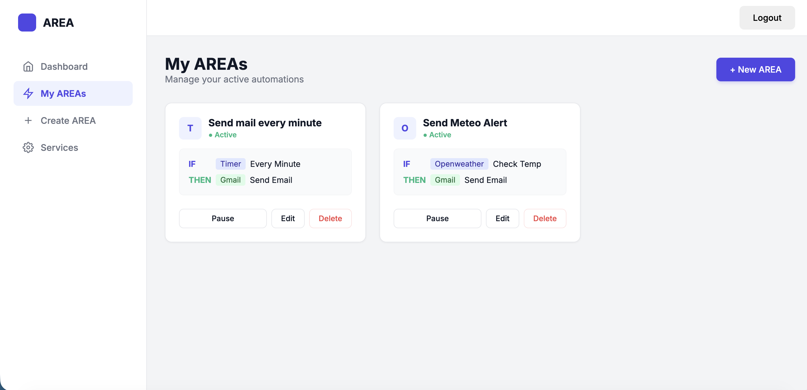
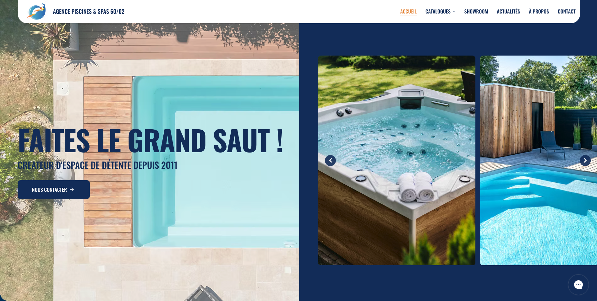
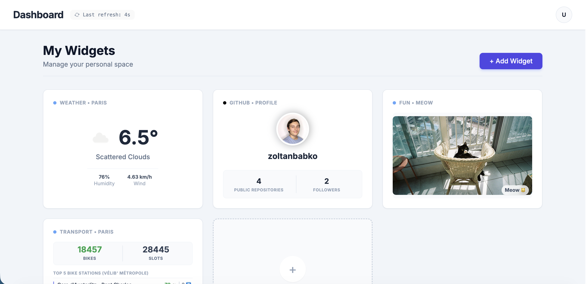
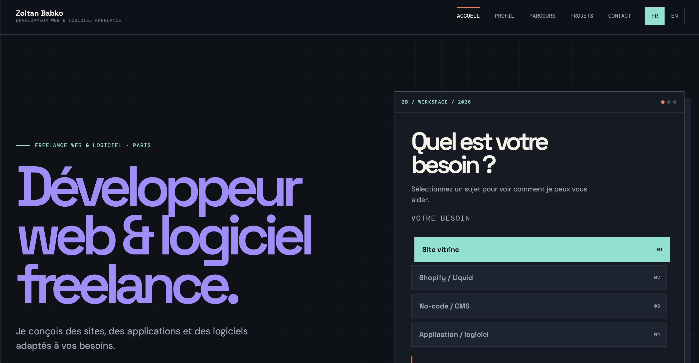

Comprendre
avant de construire
Un bon projet commence par les bons usages, les bons objectifs et une structure simple.
Freelance web / Paris - France
Je suis Zoltan, développeur web freelance. Je transforme une idée en site, boutique ou outil utile - avec du code quand il le faut, et du no-code quand il fait gagner du temps.
Un profil qui relie
Je suis en 4e année à Epitech Paris et je travaille aujourd'hui comme freelance. Ce qui m'attire dans l'informatique, c'est de partir de rien et de construire quelque chose de concret, lisible et vraiment utile.
Mon parcours passe par le développement full-stack, le Shopify/Liquid, les CMS et les projets no-code. Mon expérience de Game Master m'a aussi appris à observer, réagir vite, rester clair sous pression et créer une bonne expérience pour les autres.
Voir mon parcoursUn bon projet commence par les bons usages, les bons objectifs et une structure simple.
Code, CMS ou no-code : la solution doit servir le projet, pas l'inverse.
Une interface soignée, responsive et maintenable pour la suite de l'aventure.
Services freelance
De la première structure à la mise en ligne, je peux intervenir sur une mission complète ou rejoindre une équipe sur un besoin précis.
Structure, intégration HTML/CSS/JS, UI/UX, responsive design, performance et mise en ligne.
Personnalisation de theme, sections sur mesure, contenus CMS et optimisation du parcours boutique.
Création de sites accessibles à gérer, collections, automatisations et accompagnement éditorial.
Backends Python/Django, dashboards, interfaces React et outils adaptés aux besoins métier.
Quelques terrains de jeu
Backend, interfaces, CMS, automatisation : chaque réalisation est l'occasion de relier une contrainte technique à une expérience claire.

Plateforme web ↗Une plateforme d'automatisation inspirée d'IFTTT, développée de bout en bout pour connecter plusieurs services web.
Explorer le repo
Site vitrine ↗Un site vitrine no-code, des collections et des automatisations pour faciliter la gestion au quotidien.
Voir le site
Dashboard ↗Un tableau de bord modulable où les utilisateurs ajoutent, suppriment et organisent leurs widgets.
Voir le projet
Infrastructure ↗Un portfolio déployé sur un serveur local, avec gestion de l'infrastructure et mise en ligne via Cloudflare.
Voir le repoExpérience professionnelle
Chaque expérience m'a appris à mieux construire : avec une équipe, un client, un public ou une contrainte réelle.
Activité freelance
Accompagnement de projets web, Shopify/Liquid, no-code, CMS et outils sur mesure, de la structure à l'optimisation.
Marie-Louise Orlach® / Paris
Intégration de pages, personnalisation Liquid, fonctionnalités sur mesure, UI/UX, CMS, responsive, performance et communication digitale.
Rashomon Escape / Paris
Animation de sessions scénarisées, maintien de l'immersion, gestion du public et adaptation en temps réel.
Agence Piscines & Spas 60/02 / Villers-Cotterêts
Modification temporaire du site existant et création en parallèle d'un site vitrine no-code.
Alltoo / Paris
Stage en Python/Django et HTML/CSS/JS : maintenance de CRM, analyse de données et participation aux interfaces web.
Formation
La pédagogie par projets d'Epitech m'a donné le goût de l'expérimentation, de la résolution de problèmes et des bases solides.
Epitech - Paris · RNCP niveau 7
California State University, Long Beach
Lycée Européen
Disponible pour des missions freelance, une collaboration ou un premier échange autour d'un besoin concret.